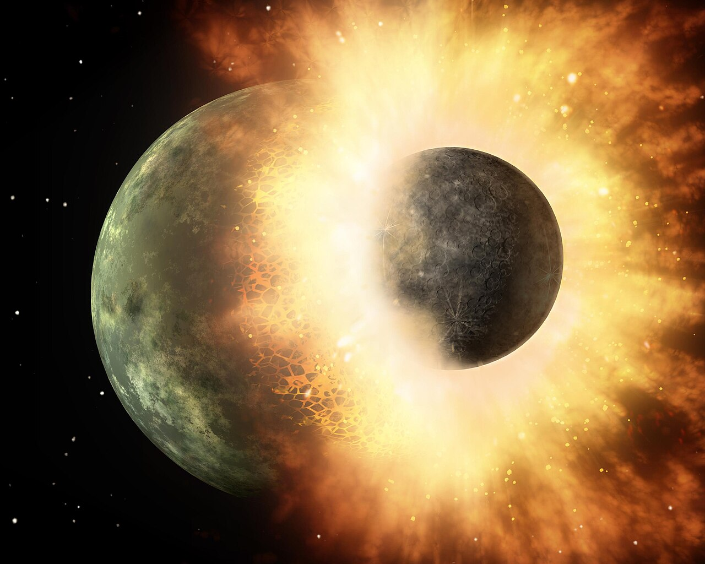
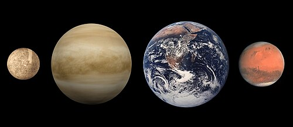

La Tierra se formó hace aproximadamente 4550 millones de años y la vida surgió unos mil millones de años después.[19] Es el hogar de millones de especies, incluidos los seres humanos y actualmente el único cuerpo astronómico donde se conoce la existencia de vida.[20] La atmósfera y otras condiciones abióticas han sido alteradas significativamente por la biosfera del planeta, favoreciendo la proliferación de organismos aerobios, así como la formación de una capa de ozono que junto con el campo magnético terrestre bloquean la radiación solar dañina, permitiendo así la vida en la Tierra.[21] Las propiedades físicas de la Tierra, la historia geológica y su órbita han permitido que la vida siga existiendo. Se estima que el planeta seguirá siendo capaz de sustentar vida durante otros 500 millones de años,[22] ya que según las previsiones actuales, pasado ese tiempo la creciente luminosidad del Sol terminará causando la extinción de la biosfera.
La superficie terrestre o corteza está dividida en varias placas tectónicas que se deslizan sobre el magma durante periodos de varios millones de años. La superficie está cubierta por continentes e islas; estos poseen varios lagos, ríos y otras fuentes de agua, que junto con los océanos de agua salada que representan cerca del 71 % de la superficie constituyen la hidrósfera. No se conoce ningún otro planeta con este equilibrio de agua líquida,[nota 6] que es indispensable para cualquier tipo de vida conocida. Los polos de la Tierra están cubiertos en su mayoría de hielo sólido (indlandsis de la Antártida) o de banquisas (casquete polar ártico). El interior del planeta es geológicamente activo, con una gruesa capa de manto relativamente sólido, un núcleo externo líquido que genera un campo magnético, y un sólido núcleo interior compuesto por aproximadamente un 88 % de hierro.[
La Tierra interactúa gravitatoriamente con otros objetos en el espacio, especialmente el Sol y la Luna. En la actualidad, la Tierra completa una órbita alrededor del Sol cada vez que realiza 366.26 giros sobre su eje, lo cual es equivalente a 365.26 días solares o un año sideral.[nota 7] El eje de rotación de la Tierra se encuentra inclinado 23.4° con respecto a la perpendicular a su plano orbital, lo que produce las variaciones estacionales en la superficie del planeta con un período de un año tropical (365.24 días solares).[28] La Tierra posee un único satélite natural, la Luna, que comenzó a orbitar la Tierra hace 4530 millones de años; esta produce las mareas, estabiliza la inclinación del eje terrestre y reduce gradualmente la velocidad de rotación del planeta. Hace aproximadamente 3800 a 4100 millones de años, durante el llamado bombardeo intenso tardío, numerosos asteroides impactaron en la Tierra, causando significativos cambios en la mayor parte de su superficie.
Eponimia y etimología

El nombre del planeta Tierra se diferencia del de otros planetas del sistema solar porque no proviene de la mitología grecorromana de manos de autores griegos o romanos. El término latino «terra» significa literalmente ‘suelo’ o ‘tierra firme’ y de ahí deriva la palabra en español. «La Tierra» también se usa como sinónimo intercambiable por «mundo», «globo» y «planeta».[18] En la Antigüedad la palabra ‘tierra’ se usaba indistintamente para referirse al suelo, a la tierra como uno de los cuatro elementos, así como al mundo habitado, sin distinción clara entre ambos
Durante la Edad Media y hasta el Renacimiento, hay textos en latín que usan terra para referirse al mundo habitable y al orbe terrestre. En el tratado De sphaera mundi (~1230) de Johannes de Sacrobosco se refiere a «orbis» al ámbito de la tierra (o mundo terrestre) como esfera. Textos como Cosmographia de Bernardo Silvestre o los geógrafos medievales usaban «orbis terrarum» (círculo de las tierras) para referirse al mundo. En De revolutionibus orbium coelestium (Copérnico, 1543), en latín, aparecen frases como «terra quoque sphaerica sit»(«que la Tierra también sea esférica»); Copérnico presentó el Sol como centro y situó la Tierra como uno de los planetas.[30] En los trabajos de Kepler, en obras como Epitome Astronomiae Copernicanae, también aparece «Terra» en contextos genéricos («in Terra» o «Terra et Luna»).
Pero fue Valentín Naboth (o Valentinus Nabodus), un astrónomo y matemático del siglo XVI, en su obra Primae de coelo et terra institutiones (1573), quien asoció la Tierra con la diosa romana Terra o Tellus. Se trata de una costumbre renacentista de armonizar conocimiento científico con la mitología clásica:
Cronología

Los científicos han podido reconstruir información detallada sobre el pasado de la Tierra. Según estos estudios el material más antiguo del sistema solar se formó hace 4567.2 ± 0.6 millones de años,[32] y en torno a unos 4550 millones de años atrás (con una incertidumbre del 1 %)[19] se habían formado ya la Tierra y los otros planetas del sistema solar a partir de la nebulosa solar, una masa en forma de disco compuesta del polvo y gas remanente de la formación del Sol. Este proceso de formación de la Tierra a través de la acreción tuvo lugar mayoritariamente en un plazo de 10-20 millones de años.[33] La capa exterior del planeta, inicialmente fundida, se enfrió hasta formar una corteza sólida cuando el agua comenzó a acumularse en la atmósfera. La Luna se formó poco antes, hace unos 4530 millones de años.[
El actual modelo consensuado[35] sobre la formación de la Luna es la teoría del gran impacto, que postula que la Luna se creó cuando un objeto del tamaño de Marte, con cerca del 10 % de la masa de la Tierra,[36] impactó tangencialmente contra esta.[37] En este modelo, parte de la masa de este cuerpo podría haberse fusionado con la Tierra, mientras otra parte habría sido expulsada al espacio, proporcionando suficiente material en órbita como para desencadenar nuevamente un proceso de aglutinamiento por fuerzas gravitatorias, y formando así la Luna.
La desgasificación de la corteza y la actividad volcánica produjeron la atmósfera primordial de la Tierra. La condensación de vapor de agua, junto con el hielo y el agua líquida aportada por los asteroides y por protoplanetas, cometas y objetos transneptunianos, produjeron los océanos.[38] El recién formado Sol solo tenía el 70 % de su luminosidad actual: sin embargo, existen evidencias que muestran que los primitivos océanos se mantuvieron en estado líquido; una contradicción denominada la «paradoja del joven Sol débil», ya que aparentemente el agua no debería ser capaz de permanecer en ese estado líquido, sino en el sólido, debido a la poca energía solar recibida.[39] Sin embargo, una combinación de gases de efecto invernadero y mayores niveles de actividad solar contribuyeron a elevar la temperatura de la superficie terrestre, impidiendo así que los océanos se congelaran.[40] Hace 3500 millones de años se formó el campo magnético de la Tierra, lo que ayudó a evitar que la atmósfera fuese arrastrada por el viento solar.[41]
Se han propuesto dos modelos para el crecimiento de los continentes:[42] el modelo de crecimiento constante,[43] y el modelo de crecimiento rápido en una fase temprana de la historia de la Tierra.[44] Las investigaciones actuales sugieren que la segunda opción es más probable, con un rápido crecimiento inicial de la corteza continental,[45] seguido de un largo período de estabilidad.[23][nota 8][25] En escalas de tiempo de cientos de millones de años de duración, la superficie terrestre ha estado en constante remodelación, formando y fragmentando continentes. Estos continentes se han desplazado por la superficie, combinándose en ocasiones para formar un supercontinente. Hace aproximadamente 750 millones de años (Ma), uno de los primeros supercontinentes conocidos, Rodinia, comenzó a resquebrajarse. Los continentes más tarde se recombinaron nuevamente para formar Pannotia, entre 600 a 540 Ma, y finalmente Pangea, que se fragmentó hace 180 Ma hasta llegar a la configuración continental actual.[